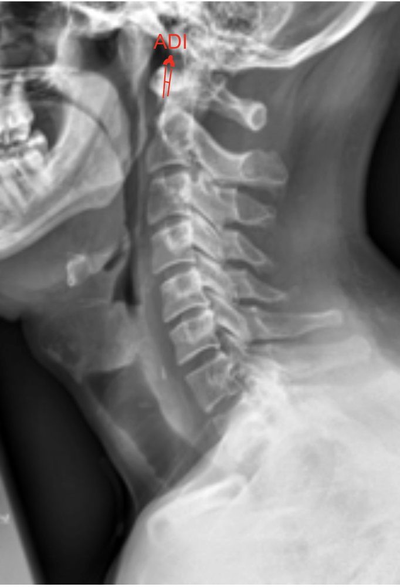
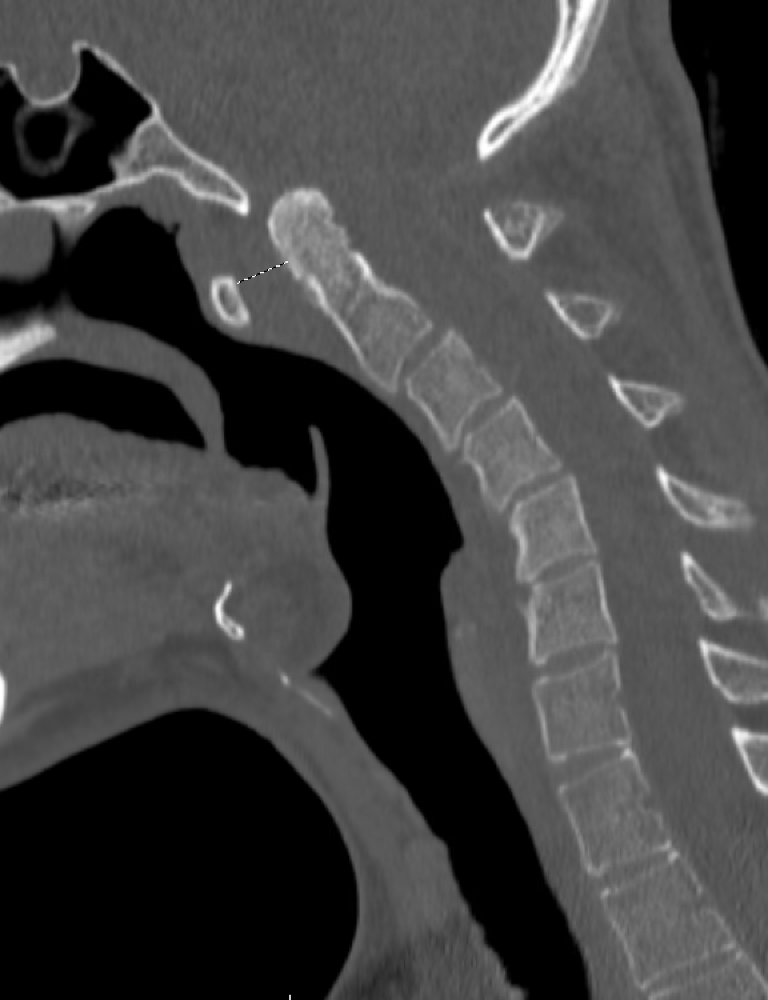
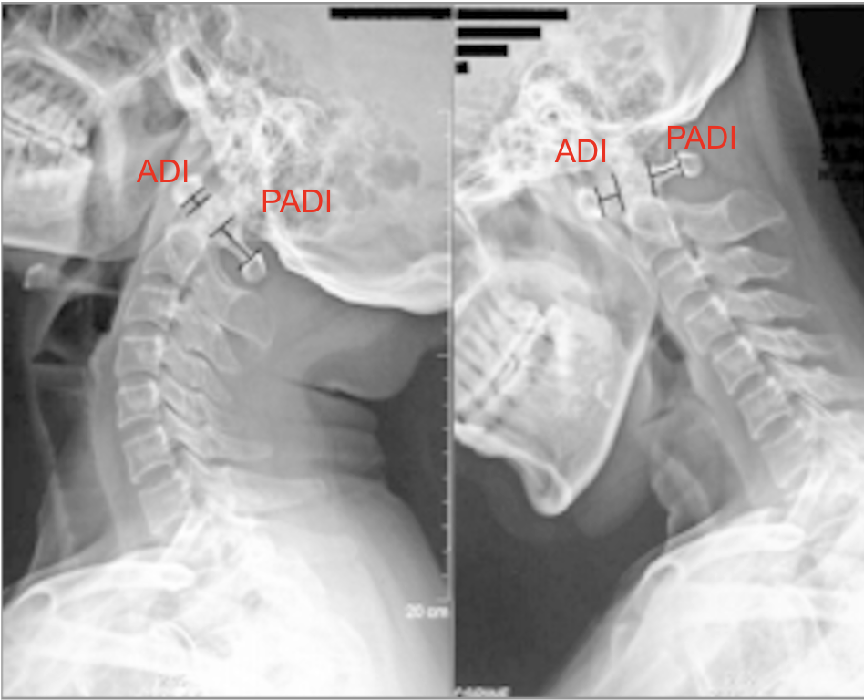

Lateral flexion XR depicting increased ADI. Adapted from: Wróblewski R, Mańczak M, Gasik R. Atlantoaxial Instability in the Course of Rheumatoid Arthritis in Relation to Selected Parameters of Sagittal Balance. Journal of Clinical Medicine. 2024; 13(15):4441. https://doi.org/10.3390/jcm13154441
1) Description of Measurement
The Atlantodental Interval (ADI)—also known as the atlantoaxial interval (AAI)—is the distance between the posterior surface of the anterior arch of the atlas (C1) and the anterior surface of the odontoid process (dens) of the axis (C2).
This measurement assesses the integrity and stability of the transverse atlantal ligament (TAL), which stabilizes the atlantoaxial joint. An increased ADI suggests instability at the atlantoaxial junction, potentially due to trauma, rheumatoid arthritis, congenital anomalies, or ligamentous laxity.
2) Instructions to Measure
Optional: Repeat the measurement on flexion and extension lateral views to evaluate dynamic instability.
3) Normal vs. Pathologic Ranges
4) Important References
Fielding JW, Hawkins RJ. Atlanto-axial rotatory fixation. (Fixed rotatory subluxation of the atlanto-axial joint). J Bone Joint Surg Am. 1977 Jan;59(1):37-44.
White AA, Panjabi MM. Clinical Biomechanics of the Spine. 2nd ed. Philadelphia, PA: Lippincott; 1990.
Dvorak J, Schneider E, Saldinger P, Rahn B. Biomechanics of the craniocervical region: the alar and transverse ligaments. J Orthop Res. 1988;6(3):452-61. doi: 10.1002/jor.1100060317.
Smoker WR. Craniovertebral junction: normal anatomy, craniometry, and congenital anomalies. Radiographics. 1994 Mar;14(2):255-77. doi: 10.1148/radiographics.14.2.8190952.
5) Other info....
Dynamic (flexion-extension) change > 1 mm may also indicate instability, even if absolute values appear normal
Flexion-extension films are especially useful in detecting occult instability.
Increased ADI is commonly seen in trauma (transverse ligament rupture), rheumatoid arthritis, Down syndrome, or Grisel’s syndrome.
ADI is often accompanied by evaluation of the posterior atlantodental interval (PADI)—the distance between the posterior aspect of the dens and the anterior border of the posterior arch of C1.
For preoperative planning, CT and MRI provide superior visualization of the odontoid, atlas ring, and ligamentous structures.